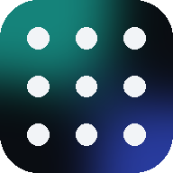

KitLab Dash
精選站點啟動台 · KitLab 商店的免費技能包
手把
--:--
全螢幕
--:--
往上滑看所有站點
建議
完成
正在載入站點清單…
推薦理由
前往官方網站
↗
回報問題
返回
這是我們收錄的站點，不是我們的作品。我們只寫推薦介紹並連到官方網站，不嵌入、不轉載；名稱與圖示屬原開發者所有。開發者如想修改介紹或不希望被收錄，歡迎告訴我們。完整說明在 kitlab.store/terms.html。
×
本期新增
本期下架
維護
KitLab Dash 怎麼運作
由 KitLab 官方維護，固定每兩週更新一期：加入新發現的好站點，打不開的站點確認後會下架。你不用做任何事，打開就是最新版。不用登入，也不收集任何資料；你唯一能調整的 Dock 只存在這台裝置上。
給我們建議
寫好按送出，內容會自動複製並打開 LINE，貼上傳給我們就好
×
推薦新站點
回報問題或優化
站點網址
說說看
複製並打開 LINE
LINE ID：
看看
橫放手機，畫面會更大